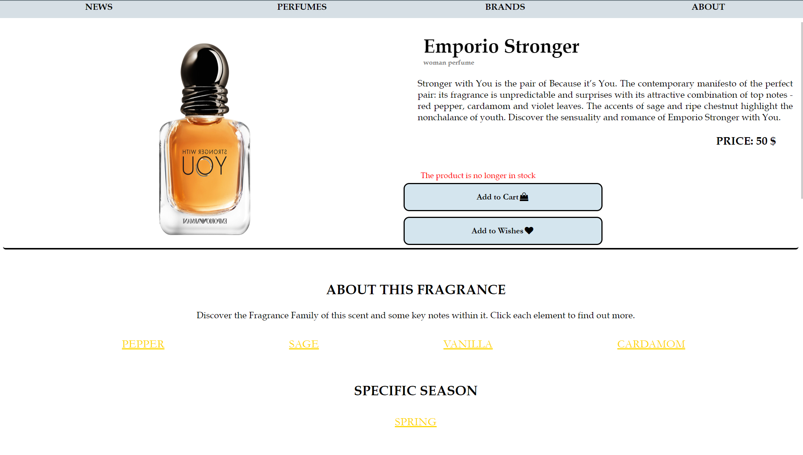

Introducere
Țel
PerMvibes este o aplicație web prin intermediul căreia se pot vizualiza și cumpăra diferite parfumuri. Produsele pot fi vizualizate atât de utilizatorii autentificați, cât și de cei care nu doresc să-și creeze un cont.
Convenții
Aplicația dorește să minimizeze efortul utlizatorului de a accesa produsele de interes. Astfel, pe pagina principală, utlizatorul găsește top 3 parfumuri ale ultimelor colecții, având posibilitatea de a accesa oricare dintre ele. De asemenea, în cadrul paginei de descriere a unui produs, utilizatorul găsește informații detaliate referitoare la prețul, valabilitatea stocului, ingredientele sale componente, aspecte legate de colecția din care face parte cât și sugestia a altor 3 produse cu care se găsesc aspecte comune.
Scopul produsului
Produsul are scopul de a furniza un mediu facil și plăcut, în care utilizatorul se poate informa despre parfumurile dorite, ingredientele sale cât și despre povestea colecțiilor din care fac parte. Site-ul urmărește atât componenta funcțională cât și cea a interfeței, oferind utilizatorului o experiență cât mai plăcută de navigare.
Referinţe
Pentru a crea un site cu o interfață cât mai utilă pentru utilizator, am documentat căteva site-uri utile a căror link se regăsește mai jos:
Descriere generală
Perspectiva produsului
PerMvibes este un site de parfumuri online care acceptă o serie de funcții pentru clientul care este ori logat, ori un simplu vizitator. Făcând o comparație cu un alt astfel de provider (i.e. Sephora), PerMvibes devine o opțiune viabilă când vine vorba de cumpărarea unui parfum, oferind utilizatorului o viziune mai largă asupra diferitelor tipuri de parfumuri .
Funcționalitățile produsului
Site-ul dispune de multiple opțiuni care îți vin în ajutor când dorești să achiziționezi un parfum. În primul rând, ai opțiunea de a căuta parfuml dorit după nume, un ingredient pe care vrei să îl aibă, după brand sau după sezonul al cărui miros vrei să ți-l imprime. În cazul în care are nelămuriri după citirea descrierii, vizitatorul poate lăsa un comentariu cu o anumită întrebare sau un review. Mai mult decât atât, utilizatorul își poate face un cont, iar prin intermediul său poate adăuga 10 produse în coș pentru a le comanda sau le poate salva în secțiunea de favorite. Fiecare utilizator își poate vedea comenzile date în secțiunea MyAccount. Administratorul aplicatiei are posibilitatea de a accesa rapoarte referitoare la stocul existent și situația vânzărilor în funcție de brand, sezon și comenzile utilizatorilor, cât și să facă import/export de date CSV.
Categorii de utilizatori
Aplicația este destinată, în principal, utilizatorilor care doresc să achiziționeze un parfum sau oricărei persoane ce are acces la Internet și un browser web. Se presupune că utilizatorul este suficient de familiarizat cu un computer pentru a opera browserul, tastatura și mouse-ul și este capabil să navigheze către, de la și în interiorul site-urilor web simple.
Mediu de operare
Fiind o aplicatie Web, PerMvibes este scalabilă în orice browser ce rulează HTML, CSS,JS, neținând cont de o versiune anume a sistemului de operare a device-ului pe care rulează aplicația.
Design și constrângeri de implementare
PerMvibes este o aplicație prin intermediul căreia îți poți alege și achiziționa parfumul preferat. Cu toate acestea, site-ul vine și cu câteva limitări. Astfel, utilizatorul poate comanda maxim 10 produse într-o singură comandă. De asemenea, pe pagina unui produs în secțiunea de produse recomandate, în care apar alte produse din aceeași categorie există o limitare de maxim 3 produse recomandate. Precum și în secțiunea de comentarii, unde apar ultimele 5.
Documentație pentru utilizator
Secțiunea "FAQ" a site-ului este gândită pentru a răspunde utilizatorului la cele mai frecvente întrebări pe care acesta le poate avea în ceeea ce privește interacțiunea cu aplicația. Întrebările din secțiune sunt selectate dintre intrebările frecvente ale utilizatorilor, iar modalitatea lor de afișare oferă utilizatorului o navigare rapidă și o identificare exactă a soluțiilor la majoritatea problemelor sau neclarităților pe care le poate avea în ceea ce privește interacțiunea cu site-ul.
Cerințe externe
Interfață utilizator
PerMvibes poate fi folosită atât pe ecrane mari cât și pe browserul telefonului al carui ecran este de dimensiuni mai reduse, iar datorită design-ului responsive calitatea interfaței nu este afectată. Tematica site-ului este una cât mai naturală, în note de albastru și gold, încercând să ofere un sentiment însuflețit, plin de viață și energie, dinamic, intens și puternic.
Interfața aplicației este simplă. Pentru a creea layout-ul, fiecare pagină s-a structurat folosind flex, deoarece este util în amplasarea elementelor în pagină.
Bara dublă de navigare este un element din interfață care este comun tuturor paginilor din aplicație, și de aceea are propriul css, astfel încât orice modificare făcută asupra ei să se aplice simultan tuturor paginilor . Prima bară conține logo-ul aplicației, urmat de bara de căutare care va interoga baza de date și un meniu minimalist în partea dreaptă care conține butonul pentru pagina principala , pagina contului , a coșului de cumpărături, a listei cu produse favorite, pagina de LOGIN, reprezentate și de icon-uri specifice. Dacă site-ul este accesat de pe browserul unui device care are dimenisuni mai mici de 650px meniul se ascunde după o iconiță poziționată în partea dreaptă a bării. Acesta este afișat vertical în partea stângă peste elementele din pagină, prin apăsarea pe icon-ul care are în spate o casetă de selectare. De asemenea, se redimensionează și bara de căutare și logo-ul. A doua bară reprezintă meniul principal al site-ului care face legatura cu paginile: NEWS, PERFUMES, BRANDS și ABOUT. În momentul în care dimensiunea display-ului scade sub 650px, aceasta bară își schimbă modul de afișare, coloanele poziționându-se de aceasta dată una sub alta.
De asemenea, un alt element din interfață comun paginilor site-ului este subsolul, care la fel ca și bara dublă de navigare are un css propriu. Acesta reprezintă, de fapt, un rând împărțit în două coloane, ce conțin informațiile de contactare sau o legătură către pagina ABOUT US. Acest element este și el la rândul lui creat astfel ca dupa anumite dimensiuni să se redimensioneze în așa fel încăt să aibă un aspect plăcut pe orice tip de device. Acest lucru s-a realizat folosind flex, inițial de tip row ca dupa ce dimensiunea scade de 650px să se transforme in flex-column.
Pagina principala
Pagina principală, care este totodată și pagina de NEWS, are în deschidere un video ales în conformitate cu tematica și spectrul de culori folosit.
Următoarea parte din pagină este realizată folosind flex și conține cele mai noi 3 parfumuri. Aceasta este formată din 3 rânduri împărțite la rândul lor în două coloane. În cele două coloane se află o imagine a produsului și o mică descriere care să stărnească curiozitatea posibilului cumpărator, precum și un buton care să-i permită utilizatorului să ajungă direct la pagina produsului pentru a vedea mai multe detalii.

Pagina unui produs
Pagina produsului are scopul de a prezenta informații, aspecte ale parfumului într-un mod cât mai clar și ușor de interceptat de către utilizator. Astfel, prin intermediul flexului pagina este împărțită în 3 secțiuni principale.
Partea de sus conține două dintre ele, ca și cum ar fi un tabel cu două coloane. În partea stângă este pusă poza produsului. Iar partea dreaptă conține: numele, drescrierea și cele două butoane de adăugare în coș sau în lista de favorite. Butoanele au colțurile rotunde, iar culoarea de background este o nuanță de albastru, în conformitate cu restul aplicației, textul din interior fiind completat de câte o iconiță specifică.
A treia parte conține restul informațiilor, începând prin prezentarea a 4 ingrediente componente de bază, fiecare dintre ele putând fi accesate, în ideea că site-ul va afișa toate parfumurile care au în componența lor ingredientul respectiv. Imediat după sunt afișate alte 3 parfumuri care se aseamănă cu produsul curent, având același brand de proveniență. În final este pusă secțiunea de comentarii.
Pagina de About
Pagina de About are scopul de oferi utilizatorului o descriere a ceea ce este PerMvibes într-un mod cât mai clar.
Aceasta este divizată în mai multe părți folosind flex. Prima parte conține o imagine, aleasă în ton cu spectrul de culori folosit pentru site, unde se află și titlul paginii ABOUT US. Următoarele doua părți, imparțite ambele în doua coloane, conțin o imagina specifică unui site de parfumuri, o descriere generală căt și una mai detaliată a PerMvibes, precum și un buton care să permită utilizatorului să meargă la pagina cu produse pentru a incepe cumpăraturile.

Pagina de Help
Pagina de Help conține o serie de întrebări frecvente pe care utlizatorii le-ar putea avea, în legătură cu operațiile de bază pe care le pot face în cadrul aplicației. Pentru un aspect mai captivat în completarea informațiilor, chiar la inceputul paginei au fost amplasate 3 poze sugestive ideii de HELP.

Pagina de Login
Conține un titlu ~WELCOME~, un form de Login și un buton de pt a da submit pentru data introdusă ca input pentru cei care vor să se conecteze ca useri cu drepturi de administrator și unul pentru cei care vor să acceseze aplicația în mod normal. ~Sign In~. Ele fiind băgate într-un container, care face la rândul lui din întregul container al paginii, pentru a cărui fundal a fost aleasă o poză în concordanță cu tematica aleasă.Pentru a nu tăia din imaginea aleasă, background-ul containerului secundar este făcut transparent specificând o culoare de albastru prin hsla.

Interfață software
Aplicația va dispune de o conectare la o bază de date relațională: phpMyAdmin, pentru a realiza anumie acțiuni ale utilizatorului ( înregistrare, autentificare) și pentru gestionarea produselor.
Interfață de comunicare
Cerințe funcționale
Înregistrare
Utilizatorii care doresc opțiunile de a salva un produs în coș, favorite sau de a plasa o comanda, sunt nevoiți să se înregistreze și să se autentifice folosind credentialele lor unice. Datele oferite vor fi trimise prin intermediul unei cereri de tip "POST" realizată de către formularul de înregistrare, doar după ce au fost validate corespunzător.
Autentificare
Utilizatorii care dețin un cont se pot autentifica pe pagina de "login" în care trebuie să-și introducă numele de utilizator(sau adresa de email) și parola. Datele introduse de către utilizator vor fi trimise printr-o cerere a formularului.
Căutarea unui produs după un atribut
Această funcționalitate permite oricărui utilizator (autentificat sau nu) să găsească o gamă de produse bazată pe un atribut specificat. Căutarea se face pe filtre de nume, brand, sezon și ingrediente. Datele introduse de către utilizator vor fi trimise printr-o cerere.
Salvarea produsului în coș
Aceasta este una dintre funcționalitățile de bază ale ale aplicației. Utilizatorul logat poate salva în coșul de cumpărături produsele disponibile în stoc.
Salvarea produsului în secțiunea de favorite
Utilizatorul logat poate salva în secțiunea de favorite o singura dată un produs care se află în stoc.
Plasarea unei comenzi
Opțiunea de plasare a unei comenzi apare în momentul în care utilizatorul are în coș cel puțin un produs. Acesta trebuie să completeze un form cu datele referitoare la adresă și plată. Datele sunt verificate, după validarea datelor se trimite comanda. În cazul unor date invalide îi sunt afișate mesaje de eroare în care sunt semnalate problemele referitoare la completarea formularului sau dacă între timp stocul produselor alese a fost epuizat.
Vizualizarea si adăugarea unui comentariu
Pe pagina unui produs, utilizatorul(autentificat sau nu) poate vizualiza ultimele 5 comentarii lăsate sau poate adăuga el un comentariu.
Vizualizarea comenzilor date
Utilizatorul poate vizualiza comenzile date în secțiunea de MyAccount, unde apar informatii despre data în care a fost plastă comanda, produsele care au fost comandate și id-ul ei.
Cerințe nonfuncționale
Cerințe de siguranță
PerMvibes este un produs sigur. O problemă care ar putea apărea ar fi legată de pierderea informațiilor din baza de date folosită, însă probabilitatea de a se întampla acest lucru este foarte mică.
Cerințe de securitate
Aplicația este protejată împotriva atacurilor de tip SQL-injection
Referințe bibliografice
- Scholarly HTML , de Tzviya Wiley Siegman & Robin Berjon
- What is Scholarly HTML? , de Robin Berjon & Sebastien Ballesteros
- Sabin Corneliu Buraga , Site-ul disciplinei "Tehnologii Web" parte a UAIC
- W3School